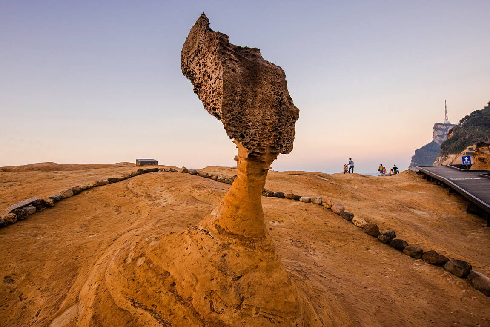

探索新北
新北市位於台灣北部，是台灣最大的城市之一，擁有豐富的自然景觀和人文景點。以下是新北市著名的景點：

九份老街
文化歷史九份隸屬新北市瑞芳區，九份在金礦業興盛前，以採樟煮腦為業。 此處計有九十口樟腦灶，而十口灶為一份，故共有九份，久而久之演變為九份地名。 九份之發展過程可謂一段先民採金史，隨採金人潮的湧入而繁華，又隨採金事業的沒落而褪色。

野柳地質公園
「野柳」為大屯山餘脈伸出海中的岬角，從金山遠眺，猶如潛入海中的巨龜，故又名為「野柳龜」。 其因波浪侵蝕、岩石風化及地殼運動等作用，造就了海蝕洞溝、燭狀石、蕈狀岩、豆腐岩、蜂窩岩、壺穴、溶蝕盤等各種奇特景觀。 女王頭、仙女鞋、燭臺石等，更是聞名國際的海蝕奇觀。 區內的林添禎塑像是紀念其當年捨身救人的英勇事蹟。
淡水老街
淡水老街分成內外兩側，外側是靠淡水河岸的金色水岸步道，內側是的傳統老街，這裡街道兩旁林立熱鬧商店，有濃濃古早味的餅舖、雜貨店，也有賣潮流服飾與玩具。 傍晚時，在金色水岸步道還可欣賞夕陽落入海面的美景。 位於山坡上的重建街由於發展較早，因此兩旁仍有許多木造與磚造的老房舍，走到街底還能從高處遠眺淡水河口。
十分瀑布
十分瀑布位於臺灣新北市平溪區，為臺鐵支線平溪線的著名景點。 地處基隆河上游瀑布群。 十分瀑布落差高度約20公尺、寬度約40公尺，壯麗的水瀑、磅礡的氣勢，為臺灣最大的簾幕式瀑布。 上游觀瀑吊橋下的「眼鏡洞瀑布」，因洞如眼鏡而得名。